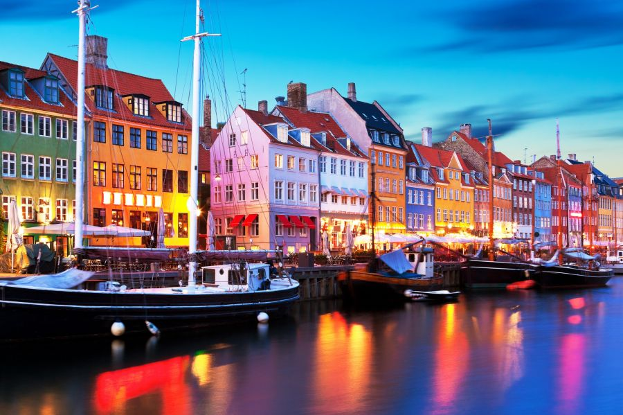

Коротка характеристика
Копенгаген — столиця Данії, місто, де сучасний екологічний дизайн зустрічається з королівською історією та затишною атмосферою.
Чому я обрала це місто?
Мене неймовірно захоплює їхня культура «хюґе» (затишку) та те, наскільки ідеально та продумано це місто створене для людей і велосипедів, а не для автомобілів.
Цікаві факти та визначні місця
- Нюгавн (Nyhavn): Знаменита набережна з яскравими кольоровими будинками 17-го століття.
- Русалонька: Символ міста, створений за мотивами казки Ганса Крістіана Андерсена.
- Велосипеди: У місті велосипедів більше, ніж самих жителів.
Моя особиста оцінка: 10/10
Додаткова інформація: Вікіпедія: Копенгаген